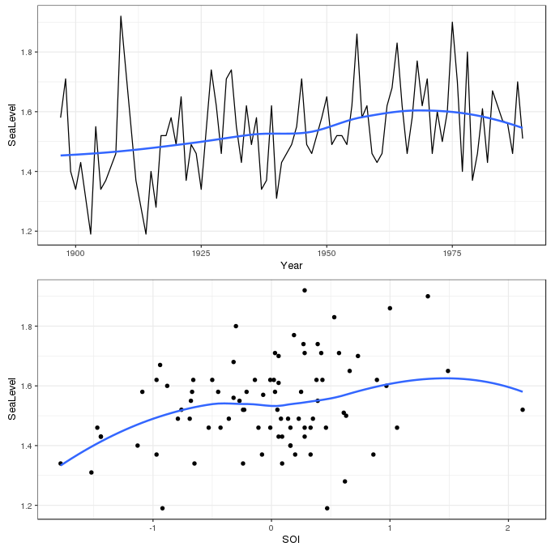
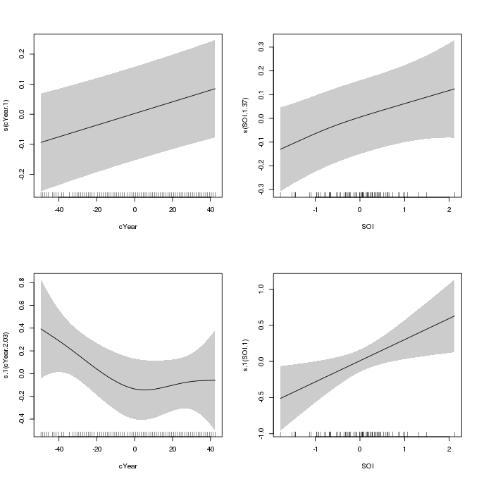
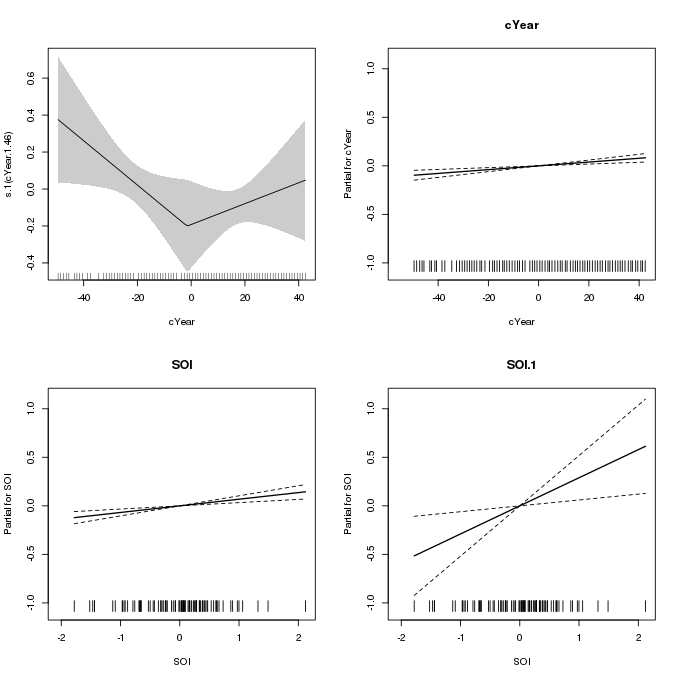
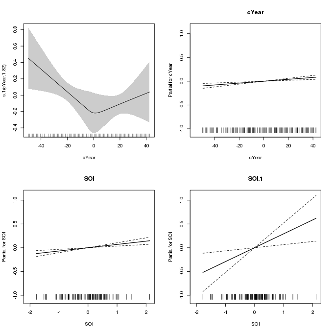

Modelling extremes using generalized additive models
Posted in
Tagged
mgcv GAM models splines smoothers extremes GEV extreme values statistical modelling
Quite some years ago, whilst working on the EU Sixth Framework project Euro-limpacs, I organized a workshop on statistical methods for analyzing time series data. One of the sessions was on the analysis of extremes, ably given by Paul Northrop (UCL Department of Statistical Science). That intro certainly whet my appetite but I never quite found the time to dig into the arcane world of extreme value theory. Two recent events rekindled my interest in extremes; Simon Wood quietly introduced into his mgcv package a family function for the generalized extreme value distribution (GEV), and I was asked to review a paper on extremes in time series. Since then I’ve been investigating options for fitting models for extremes to environmental time series, especially those that allow for time-varying effects of covariates on the parameters of the GEV. One of the first things I did was sit down with mgcv to get a feel for the gevlss() family function that Simon had added to the package by repeating an analysis of a classic example data set that had been performed using the VGAM package of Thomas Yee.
The analysis I wanted to recreate was reported in a 2007 paper by Thomas Yee and Alec Stephenson (Yee and Stephenson, 2007) and concerned a time series of annual maximum sea-level at Fremantle, Western Australia. This example is also used extensively in Stuart Coles excellent book on statistical modeling of extremes (Coles, 2001). The data are available from the ismev support package for Coles’ book in the data set fremantle
## install.packages("ismev") # if not installed!
data(fremantle, package = "ismev")
head(fremantle)
Year SeaLevel SOI
1 1897 1.58 -0.67
2 1898 1.71 0.57
3 1899 1.40 0.16
4 1900 1.34 -0.65
5 1901 1.43 0.06
7 1903 1.19 0.47
The data contain 86 observations of the annual maximum sea level (in meters) over the period 1897–1989. The aim of the analysis is to account for any change in the distribution of annual maxima over time and to investigate any relationship with the Southern Oscillation Index, a measure of meteorological phenomena which reflects the development and intensity of El Niño events, and those of its counterpart La Niña, in the south Pacific. The data are shown below using ggplot
library("mgcv")
library("ggplot2")
library("cowplot") # install.packages("cowplot") If not installed !
theme_set(theme_bw())
p1 <- ggplot(fremantle, aes(x = Year, y = SeaLevel)) +
geom_line() + geom_smooth(se = FALSE)
p2 <- ggplot(fremantle, aes(x = SOI, y = SeaLevel)) +
geom_point() + geom_smooth(se = FALSE)
plot_grid(p1, p2, ncol = 1)
In extreme value analysis, one of the key components is to assess the behaviour of the very large, or small, events/observations, and often the focus is on those that are much more extreme than those in the observational record. This requires a considerably different approach to the usual statistical methods that focus on the mean of a distribution. Whilst we could approach the analysis of data like that in fremantle from the view point of traditional methods employing the Gaussian distribution, the events of interest, the extreme high sea-level events, are way off in the tails of a distribution fitted by considering (usually) just its mean (and variance). Even small uncertainties in estimation of the distribution can be amplified when we get out into the extreme tails of the Gaussian, complicating inference about extremes and inflating uncertainties.
Extreme value theory has developed separate models and limiting distributions that replace central role that the Gaussian distribution plays in other areas of statistical modeling and inference. Consider again the sea-level data; the sea level would have been measured daily (or roughly daily) at Fremantle in order to produce the annual maximum series we wish to analyze. For a single year, we might denote these daily observations by \(Z_1, \ldots, Z_m\) and we’ll assume that these are a random sample of sea-level values. The annual maximum is given by
\[ Y_m = \max \left\{ Z_1, \ldots, Z_m \right\} \]
\(Y_m\) are commonly known as block maxima — the maxima of a block of random variables \(Z_m\). Extreme value theory considers the limiting distribution of \(Y_m\) as \(m\) tends to infinity. More simply, we want derive the distribution of annual maximum sea-level values as the number of annual maxima tends to infinity. The limiting distribution for \(Y_m\) is restricted to the class of generalized extreme value distributions (GEV), which have the following form
\[ G(y) = \exp \left \{ - \left [ 1 + \xi \left ( \frac{y - \mu}{\sigma} \right ) \right ]_{+}^{-1/\xi} \right \} \]
where \(\mu\), \(\sigma > 0\), and \(\xi\) are the location, (positive) scale, and shape parameters respectively of the distribution. The distribution has support on values \(y\) where \(1 + \xi (y - \mu / \sigma) > 0\), which is indicated by the subscript \(+\) in the main equation above. \(\mu\) and \(\xi\) can take any real value in the range \(-\infty\)–\(+\infty\), whereas \(\sigma\) the scale, or variance, parameter can be any positive real value.
The GEV distribution encompasses the three potential extreme value distributions for block maxima:
I. the Gumbel distribution, II. the Fréchet distribution, and III. the Weibul distribution.
These are also known as the Type I, II, and III extreme value distributions. Though I won’t write out the equations for each of these distributions, they are all quite similar to the GEV distribution and have parameters \(\mu\), \(\sigma\), whilst the Fréchet and Weibull distributions also have a shape parameter \(\xi\). The distributions differ markedly at the extreme positive end of \(y\), \(y_{+}\); the Weibull is finite, but both the Fréchet and Gumbel distributions are infinite, being distinguished by having polynomially and exponentially decaying density respectively. Each of these distributions can be reached from the GEV
- the Gumbel is reached when \(\xi = 0\),
- the Fréchet when \(\xi\) is positive (\(\xi > 0\)), and
- the Weibull when \(\xi\) is negative (\(\xi < 0\))
Traditionally, researchers had to decide which type of tail behaviour they expected prior to fitting one of the three extreme value distributions. The clear advantage of the GEV is that the choice of distribution is now a parameter that can be included in the model fitting process leading to fewer a priori decisions needing to be made ahead of the analysis.
As I mentioned above, the gevlss() family allows for separate linear predictors \(\eta\) for each of the parameters \(\mu\), \(\sigma\), and \(\xi\), to depend on one or more covariates. When setting up this model, therefore, we need to specify not one formula, but three. These are supplied in a list, with only the first having a left hand side term for the response.
The first model considered by Yee and Stephenson (2007) allowed for a smooth trend in Year and a smooth effect of SOI in the linear predictors for \(\mu\) and \(\sigma\) whilst \(\xi\) was modeled as an intercept only linear predictor. The reason for the simple linear predictor for \(\xi\) is that this parameter is exceedingly difficult to estimate from data; in a relatively small data set like the fremantle one there is very little information with which to inform \(\xi\).
To specify this model in gam() we need to create a list of three formula objects as follows:
list(SeaLevel ~ s(cYear) + s(SOI),
~ s(cYear) + s(SOI),
~ 1)Key points to note here are
- The ordering of the formula components is \(\mu\), \(\sigma\), and \(\xi\),
- only the first formula, for \(\mu\), has a left hand side specifying the response variable, in this case
SeaLevel, - the second and third formulas are right-hand sided only and start with a
~, - intercept-only linear predictors are indicated by the formula
~ 1
This model can be thought of as an extended GLM and as such, each linear predictor is associated with a link function. The default links for \(\mu\), \(\sigma\), and \(\xi\) in the gevlss() family are "identity", "identity" and "logit" respectively, although technically the linear predictor for \(\sigma\), \(\eta_{\sigma}\), is for the log scale parameter and hence the default identity link implies a fixed log link for \(\sigma\). Additionally, the "logit" link for \(\xi\) is modified to restrict the range to -1 – 0.5. To match the model fitted by Yee and Stephenson (2007), the identity link is used for all three parameters.
Finally, note that the VGAM package requires the user to specify the degrees of freedom for each smooth term and the software searches for a smoothing parameter that achieves the required degrees of freedom. mgcv takes a different tack; the user specifies the dimension of the basis (the number of basis functions) to use for each smooth term and then it chooses smoothness parameters via penalized likelihood to maximize a log-marginal or log-restricted marginal likelihood. Assuming that the dimension of the basis is sufficiently rich to include the true but unknown smooth function, the mgcv approach avoids the user having to state a priori how wiggly each smooth term should be.
Yee and Stephenson (2007) used three degrees of freedom splines for each smooth term. Here I leave the basis dimension at the (essentially arbitrary) default value of 10. It will be instructive to see what smoothness parameters are selected as optimal, how mgcv copes with estimating smoothness in a relatively complex setting, and how the estimated smooths compare with those assumed by Yee and Stephenson (2007).
One final tweak is required; the estimates of the intercept terms for \(\mu\) and \(\sigma\) would imply extrapolation backwards in time 2,000 years. It can help numerical stability when fitting if we centre Year about say the middle of the time series, which we do now before proceeding
fremantle <- transform(fremantle, cYear = Year - median(Year))With that out of the way, the model is fitted with relative ease as follows
m1 <- gam(list(SeaLevel ~ s(cYear) + s(SOI),
~ s(cYear) + s(SOI),
~ 1),
data = fremantle, method = "REML",
family = gevlss(link = list("identity", "identity", "identity")))
summary(m1)
Family: gevlss
Link function: identity identity identity
Formula:
SeaLevel ~ s(cYear) + s(SOI)
~s(cYear) + s(SOI)
~1
Parametric coefficients:
Estimate Std. Error z value Pr(>|z|)
(Intercept) 1.49567 0.01517 98.577 <2e-16 ***
(Intercept).1 -2.13680 0.08853 -24.135 <2e-16 ***
(Intercept).2 -0.25472 0.08851 -2.878 0.004 **
---
Signif. codes: 0 '***' 0.001 '**' 0.01 '*' 0.05 '.' 0.1 ' ' 1
Approximate significance of smooth terms:
edf Ref.df Chi.sq p-value
s(cYear) 1.000 1.000 15.030 0.000106 ***
s(SOI) 1.366 1.650 13.549 0.000554 ***
s.1(cYear) 2.032 2.546 4.922 0.129164
s.1(SOI) 1.000 1.000 6.461 0.011026 *
---
Signif. codes: 0 '***' 0.001 '**' 0.01 '*' 0.05 '.' 0.1 ' ' 1
Deviance explained = NA%
-REML = -41.116 Scale est. = 1 n = 86
The summary() output is similar to that of standard GAMs, except the convention is to append .N, where N is a positive integer, to terms for (confusingly) the second and third linear predictors respectively. The parametric terms are listed first.
Of interest here for this model is the estimate of \(\xi\), which is negative, -0.25 (with standard error 0.09 yielding approximate 95% confidence interval -0.43 – -0.08), indicating a Weibull-type distribution for the annual sea-level maxima. The values reported by Yee and Stephenson (2007) are \(\hat{\xi}\) = -0.27, with standard error 0.06.
The smooth terms are listed next, and with the exception of the smooth of Year in \(\eta_{\sigma}\), all the estimated smooths have been penalized to (effectively) linear functions. The partial effect of each smooth can be plotted using the plot() method for gam models
plot(m1, pages = 1, scheme = 1, scale = 0, seWithMean = TRUE)
m1 which uses penalized splines for the smooths of Year and SOI in the linear predictors for the location and scale parameters of the GEV distributionAs reported in Yee and Stephenson (2007), the fitted smooth of Year in \(\eta_{\sigma}\) (lower left panel) is somewhat non-linear, with partial effect of decreasing variance in sea-levels through c. 1945 and increasing variance thereafter. Yee and Stephenson (2007) suggest that this smooth may be replaced by a piece-wise linear function with a knot round 1945. The authors also simplified the model by replacing the smooths for all the other variables with linear parametric terms. We will investigate this model next.
I haven’t quite worked out how to get gam() to fit a piece-wise linear function yet, but the approach below is pretty close. The following model uses the new b-spline basis in mgcv, which allows a lot of control over how the basis is set up. In basic R, a piece-wise linear basis with interior knot at 1945 would be created using splines::bs(Year, degree = 1, knots = 1945), but then as far as gam() is concerned, the resulting basis functions are simply two continuous covariates that are treated a linear parametric terms.
We can use the new b-spline basis to achieve something similar to (the same as ?) splines::bs if we set the knot locations explicitly and use m = 1 (for linear splines) and basis dimension k = 3. If you are setting the knots manually, then for the b-spline basis in mgcv you need to specify k + m + 1 (5) knots and the middle k - m + 1 (3) knots should include all the covariate values. I’m not sure what determines where the two exterior knots should be located; in the code below I just locate the at +/- 10 years from the extremes of the data. The knot locations then are specified as a list with component cYear (to match the covariate name), and as we’re modeling with the centred Year, I centre the knot locations using the middle year as before.
knots <- with(fremantle, list(cYear = c(min(Year) - c(10, 0), 1945, max(Year) + c(0, 10)) - median(Year)))The GAM can then be specified as before with three formulas. The type of smooth for cYear in \(\eta_{\sigma}\) is specified via bs = "bs" and the remaining parameters of the basis are as described above. The list of knots we just created is passed to the knots argument.
m2 <- gam(list(SeaLevel ~ cYear + SOI,
~ s(cYear, bs = "bs", m = 1, k = 3) + SOI,
~ 1),
data = fremantle, method = "REML",
family = gevlss(link = list("identity", "identity", "identity")),
knots = knots)
summary(m2)
Family: gevlss
Link function: identity identity identity
Formula:
SeaLevel ~ cYear + SOI
~s(cYear, bs = "bs", m = 1, k = 3) + SOI
~1
Parametric coefficients:
Estimate Std. Error z value Pr(>|z|)
(Intercept) 1.5010226 0.0153061 98.067 < 2e-16 ***
cYear 0.0019503 0.0005139 3.795 0.000148 ***
SOI 0.0682778 0.0175807 3.884 0.000103 ***
(Intercept).1 -2.1230063 0.0882978 -24.044 < 2e-16 ***
SOI.1 0.2894395 0.1145038 2.528 0.011479 *
(Intercept).2 -0.2543328 0.0885032 -2.874 0.004057 **
---
Signif. codes: 0 '***' 0.001 '**' 0.01 '*' 0.05 '.' 0.1 ' ' 1
Approximate significance of smooth terms:
edf Ref.df Chi.sq p-value
s.1(cYear) 1.465 2 4.875 0.036 *
---
Signif. codes: 0 '***' 0.001 '**' 0.01 '*' 0.05 '.' 0.1 ' ' 1
Deviance explained = NA%
-REML = -39.611 Scale est. = 1 n = 86
The summary output indicates significant linear parametric effects of cYear and SOI in \(\eta_{\mu}\), and SOI in \(\eta_{\sigma}\). There is now some evidence of an effect of SOI on the variance of the block maxima, although we would be right to treat this result with caution as the piece-wise linear structure was only guessed at after fitting the more general smooth term, which was not statistically significant. Yee and Stephenson (2007) performed an informal deviance test between the two models, which we repeat here
lldif <- unclass(logLik(m1) - logLik(m2))
dfdif <- df.residual(m2) - df.residual(m1)
pchisq(2 * lldif, df = dfdif, lower.tail = FALSE)
[1] 0.3693541
attr(,"df")
[1] 9.1958
the results of which match those published and suggest that the simpler model with the piece-wise linear smooth of Year in \(\eta_{\sigma}\) is sufficient to describe the effect on the variance of the sea-level maxima.
The fitted piece-wise linear smooth can be plotted using the plot() method as before. To get the linear terms plotted we need to use to all.terms = TRUE option
plot(m2, pages = 1, scheme = 1, seWithMean = FALSE, all.terms = TRUE)
m2 which uses a piece-wise linear spline for the effect of Year on the scale parameterThis plot is a little more clunky than the previous one as the linear terms are plotted via calls to termplot() and the way this is achieved in plot.gam() doesn’t allow for separate y-axis limits for the linear terms (scale = 0) and the scheme argument does not affect these plots either.
If we wanted an entirely data-driven approach to fitting the smooth of Year in \(\eta_{\sigma}\), and wanted to crack that particular nut with an industrial-sized wrecking ball, we could use the adaptive spline basis by changing the basis type for the smooth to bs = "ad" as follows (note this takes a while to fit)
m3 <- gam(list(SeaLevel ~ cYear + SOI,
~ s(cYear, bs = "ad") + SOI,
~ 1),
data = fremantle, method = "REML",
family = gevlss(link = list("identity", "identity", "identity")))
summary(m3)
Family: gevlss
Link function: identity identity identity
Formula:
SeaLevel ~ cYear + SOI
~s(cYear, bs = "ad") + SOI
~1
Parametric coefficients:
Estimate Std. Error z value Pr(>|z|)
(Intercept) 1.5025023 0.0154310 97.369 < 2e-16 ***
cYear 0.0019770 0.0005175 3.820 0.000133 ***
SOI 0.0689087 0.0175007 3.937 8.23e-05 ***
(Intercept).1 -2.1203031 0.0899383 -23.575 < 2e-16 ***
SOI.1 0.2917915 0.1132973 2.575 0.010011 *
(Intercept).2 -0.2677254 0.0935770 -2.861 0.004223 **
---
Signif. codes: 0 '***' 0.001 '**' 0.01 '*' 0.05 '.' 0.1 ' ' 1
Approximate significance of smooth terms:
edf Ref.df Chi.sq p-value
s.1(cYear) 1.816 2.046 5.86 0.0563 .
---
Signif. codes: 0 '***' 0.001 '**' 0.01 '*' 0.05 '.' 0.1 ' ' 1
Deviance explained = NA%
-REML = -40.975 Scale est. = 1 n = 86
Again, there is some evidence of a trend in the variance of the sea-level maxima; the higher p-value here likely reflects the additional uncertainty arising from having to deduce the shape and varying wiggliness of the spline from the data directly. The resulting smooth is largely indistinguishable from the piece-wise linear one in m2, except for the smooth transition around 1945.
plot(m3, pages = 1, scheme = 1, seWithMean = FALSE, all.terms = TRUE)
m3 which uses an adaptive spline for the effect of Year on the scale parameterMy attempt to replicate the analysis of Yee and Stephenson (2007) was largely devoid of any troubles despite the gevlss() family being both new and described by Simon as “somewhat experimental”. The main difficulty was in trying to get a piece-wise linear spline within the mgcv framework, largely because doing it via splines::bs() makes it much more difficult to plot the partial effect of the overall function with the easily accessible tools that mgcv provides.
One area where mgcv is lacking in relation to VGAM for fitting GEV models is in the array of support functions that go with the fitted models — VGAM has lots of plot types specific to extreme value models that help with interpreting and checking the fitted model. In a future post I may try to tackle some of this using mgcv, if I find the time.
This is hopefully the first of several posts on modeling block maxima using mgcv and GAMs, so if you have any comments, suggests, corrections, let me know in the comments below.